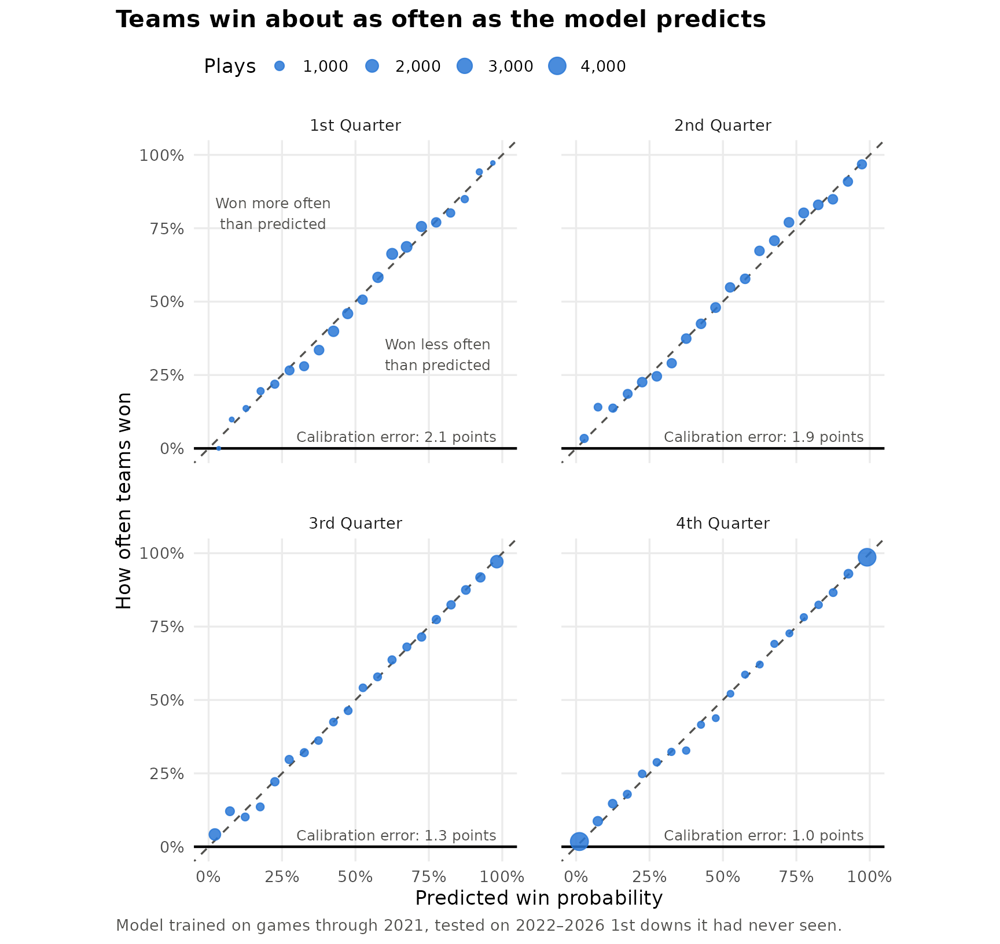
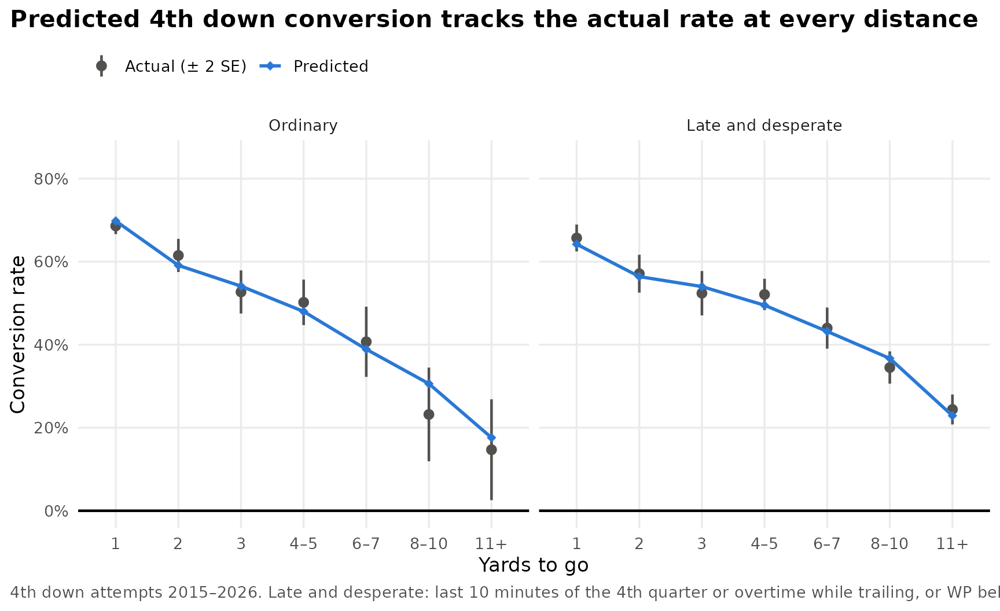
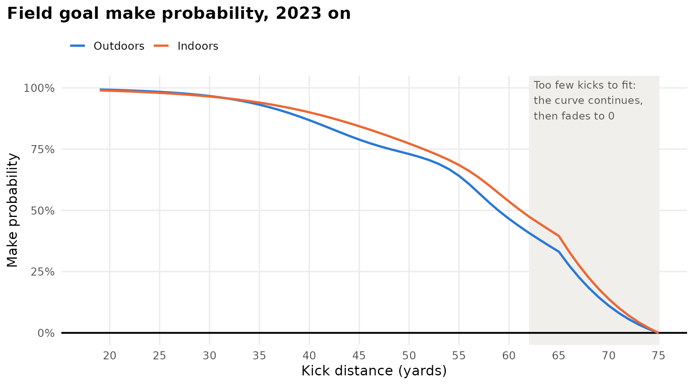
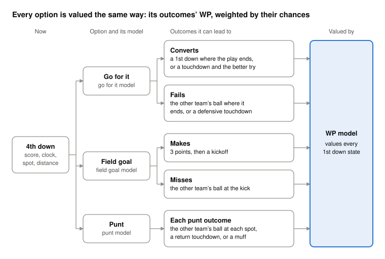

How nfl4th makes 4th down recommendations
nfl4th
Source:vignettes/articles/how-nfl4th-works.Rmd
how-nfl4th-works.RmdThe short version
It’s 4th & 2 at midfield. Do you go for it, punt, or kick a field goal? nfl4th answers that question the same way every time: it asks which choice gives the offense the best chance to win the game.
Every choice can play out a few different ways. Go for it, and you convert or you don’t. Kick, and you make it or miss it. Punt, and the other team gets the ball somewhere, usually deep in its own end. For each of those outcomes, we know roughly how often teams go on to win, because we’ve watched what happened next in more than 7,000 NFL games. Weight each outcome by how likely it is, add them up, and you have each choice’s win probability. The recommendation is whichever is highest.
This page walks through every piece of that. It replaces the 2020 article in The Athletic that introduced the 4th down bot. The idea is the same, but every model behind it has since been rebuilt.
Two terms come up a lot:
- Win probability (WP) is the offense’s chance of winning the game, from 0 to 100%.
- The go boost is how much going for it adds to the offense’s win probability compared with the better kick, in percentage points. A go boost of +2 means going for it raises the chance of winning by 2 points; −2 means kicking is better by 2.
Win probability: what is a game situation worth?
Everything rests on one question: with this score, this much time left and the ball at this spot, how often does a team win?
After any 4th down decision, the next snap is a 1st down. It’s the offense’s after a conversion, the other team’s after a punt, a missed field goal or a turnover on downs, and the receiving team’s after the kickoff that follows a score. So our win probability model is built on 1st downs only: every regulation 1st down since 1999, about 416,000 snaps from 7,393 games.
It knows:
- the score
- how much time is left in the game and in the half
- where the ball is
- how many timeouts each team has
- the point spread
- which team is at home
- in the 1st half, which team gets the ball to start the 2nd half
It doesn’t know the weather, whether there’s a roof, or anything about the two teams except the point spread. The spread does a lot of work: it’s the betting market’s estimate of how much better one team is than the other.
How it’s built. The model follows the same recipe as nflfastR’s win probability model, retuned for 1st downs.
- A starting point from the score and the spread. Early in a game a 7 point lead isn’t worth much, because there’s so much football left. With two minutes left it’s nearly decisive. A simple statistical model of how scores drift over a game, going back to Hal Stern in 1994, captures most of this. Near the end of a half, having the ball is worth only the field goal it might lead to, and the model accounts for that too.
- Machine learning on top. A machine learning model (xgboost) learns what the simple model misses. It has guardrails: more points, a better spread, being closer to the end zone and having more timeouts can never lower a team’s win probability, and the other team having more timeouts can never raise it. It leans on more detail in the last few minutes, when every second and every yard matter.
-
Common sense where the data is thin.
- A team can’t be worth more than if it scored a touchdown on this snap, or less than if it kicked a field goal.
- A team that’s ahead and can kneel out the clock wins.
- A team that’s behind, deep in its own end, with a few seconds left, loses.
- In a tie game at the very end, the team is worth whatever its best last option is: a field goal try, or overtime.
- In the last four minutes, win probability is smoothed over a few seconds and a couple of yards, so it doesn’t jump around from one snap to the next.
Overtime uses nflfastR’s overtime model, along with whatever overtime rules were in force that season: sudden death, the old rule where a field goal on the first drive gives the other team a chance, or today’s rule where both teams get the ball (playoffs since 2022, regular season since 2025). A regular-season overtime that runs out of time ends in a tie, which counts as half a win.
How good is it? We trained it on games through 2021 and tested it on the 2022–2026 seasons, which it had never seen. It did better than what nfl4th used before, and better than nflfastR’s new model trained on the same seasons. Lower is better in all three columns: log loss and the Brier score measure how far the predictions are from what actually happened, and calibration error measures whether a team given a 60% chance really wins about 60% of the time.
| Model | Log Loss | Brier Score | Calibration Error (WP Points) |
|---|---|---|---|
| nfl4th Before (Old Model Averaged With nflfastR’s Old Model) | 0.46511 | 0.15397 | 1.37 |
| nfl4th’s Old Model Alone | 0.46599 | 0.15426 | 1.45 |
| nflfastR’s New Model (All Downs, Through 2021) | 0.46457 | 0.15406 | 1.25 |
| nfl4th’s New Model (Through 2021) | 0.46390 | 0.15386 | 1.22 |
The gain over what nfl4th used before is small, and within the margin of error. The bigger improvement is that the new model behaves sensibly. The old one sometimes valued 1st & goal at the 2 more highly than the touchdown itself: on a test grid of tied games in the first three quarters, a quarter of the time, by as much as 5.6 points. It also wobbled from one second and one yard line to the next. The new one never values 1st & goal above the touchdown, and it’s about 5 times smoother across the field and 20 times smoother across the clock.
Here’s how the new model’s predictions lined up with what actually happened in those 2022–2026 games. Each dot is a group of plays with similar predictions, sized by how many plays are in it. On the dashed line, teams won exactly as often as the model said they would.

Going for it: will it work, and where does the play end?
Converting is only part of the story. A 4th & 2 that gains 40 yards is worth a lot more than one that gains exactly 2, and a failed attempt at the opponent’s 30 hands over the ball in a very different spot than one at your own 30.
So the go for it model doesn’t just predict whether a team converts. It predicts where the play ends: how likely a conversion is, how likely it goes all the way for a touchdown, how far past the line to gain it goes, and where a failed attempt leaves the ball. Each of those spots gets its own win probability, so a long touchdown counts as a touchdown rather than getting lost in an average.
It’s built from every 3rd and 4th down attempt since 2001: about 200,000 plays, about 15,000 of them on 4th down.
What it pays attention to:
- How far to go, and where on the field. Goal line situations get their own treatment, and a conversion on 4th & goal is always a touchdown.
- The down. 4th downs convert a little differently from 3rd downs at the same distance. 3rd downs are included because they make the 4th down predictions better; there just aren’t that many 4th downs.
- How good the teams are, through the point spread and the over/under. Favorites convert more often, though the spread matters less on 4th and long.
- The era. Since 2020, teams convert short and medium 4th downs more often than they used to, and long ones slightly less often.
- Desperation (below).
Desperation. When a team is trailing late, or its chances are already slim, 4th and long works more often than you might think: since 2001, these attempts converted 36% of the time at 4th & 8–10, against 28% in ordinary situations. And most 4th and long attempts happen in exactly these spots: 599 of the 664 attempts at 4th & 8–10 since 2015. If the model lumped them together, it would think 4th & 9 in the 2nd quarter is easier than it is, and tell teams to go for it too often. So desperate situations get their own conversion rates. “Desperate” here means the last 10 minutes of the 4th quarter or overtime while trailing, or a win probability below 15%. The end of the 1st half doesn’t count: those attempts convert like ordinary ones, or worse.
What counts as going for it. Runs, passes and sacks count, and so do interceptions and fumbles lost, as failed attempts. Defensive penalties that give a first down count as conversions, even ones where no play is run, like offside. Encroachment and neutral zone infractions don’t count: that’s usually a defense jumping on a hard count, and the offense may never have meant to run a play. Neither do false starts and delays of game, fake punts and field goals, or kneels.
Pick sixes. Sometimes a failed attempt is returned for a touchdown. That happens on 0.3% to 2.8% of failed 4th downs, most often when the offense is deep in its own end, since the return is shorter. The model counts those as the defense scoring.
How good is it? We fit it on games through 2019 and tested it on 2020–2026, and it predicted those seasons better than the model it replaced. Across 2015–2026, predicted conversion rates track actual ones at every distance, in ordinary and desperate situations alike:

Field goals
A field goal has two outcomes. Make it, and it’s 3 points and a kickoff. Miss it, and the other team gets the ball where the kick was taken, 8 yards behind the line of scrimmage (or at its own 20, if that’s better for it).
The chance of making it depends on the distance, whether the game is indoors or outdoors, and the era. Kickers have gotten better: outdoors, the model gives a 50 yarder a 68% chance in 2014–2022 and 73% since 2023. The kick distance is the line of scrimmage plus 18 yards, 10 for the end zone and 8 for the hold.
Long kicks need a correction. Only teams that trust their kicker try 57 yarders: at that distance, only about 9% of teams facing 4th & 5 or longer even try one. So the kicks we see from that far out were made by the best kickers, and taking their make rate at face value would overrate the average kicker. We measure how often teams attempt a kick from each distance, and where few do, we lean on how kickers do at distances where nearly everyone kicks. The correction can only lower the make probability.
Past 62 yards there are too few attempts to learn much from. The make probability keeps falling along the same curve, then fades to zero between 65 and 75 yards. For what it’s worth, kicks of 64 yards or more went 7 for 19 from 2023 to 2026.

Compared with before. Up to 63 yards, almost nothing changed. Past that, the old model dropped to zero at 72 yards. On those 19 kicks of 64+ yards, the old model expected a 27% make rate and the new one 30%; kickers made 37%. At 55–59 yards, both models sit about 4 points below how often kickers actually made those kicks (61% against 66% since 2023). That’s the long kick correction doing its job: the model describes the average kicker, not the ones trusted to try.
After any kickoff, the receiving team starts at the average spot for that era’s kickoff rules: its own 22 (2011–2015), 25 (2016–2023), 30 (2024) or 31 (2025 on).
Punts
When a team punts, the model asks where the other team’s first snap will be. It covers every spot from the opponent’s 31 back to the punting team’s own 1: touchbacks, punts downed inside the 10, long returns, return touchdowns (including blocked punts), and muffs the punting team recovers. Each outcome gets its win probability, weighted by how likely it is.
It’s built from the punts of the last 8 seasons, about 16,000 of them. Punters have gotten better: net punts are about 3 yards longer than in 2010–2013, so older seasons would undersell punting today. The model looks at the next snap rather than the punt itself, so blocked punts and penalties on the return are already baked in.
Here’s what a punt looks like from a few spots:
| Punting From | Touchback | Start Inside the 10 | Return TD | Muff Recovered | Average Start |
|---|---|---|---|---|---|
| Opponent’s 40 | 19% | 54% | 0.1% | 0.6% | Own 11 |
| Midfield | 15% | 39% | 0.2% | 0.9% | Own 13 |
| Own 40 | 15% | 20% | 0.3% | 1.2% | Own 18 |
| Own 30 | 6% | 6% | 0.5% | 1.3% | Own 25 |
| Own 20 | 1% | 1% | 0.8% | 1.3% | Own 36 |
| Own 5 | 0% | 0% | 1.3% | 1.1% | Midfield |
The average start counts touchbacks as the 20 and leaves out return touchdowns and muffs. Nothing in the punt model depends on the teams, the weather or the score, and punts from inside the opponent’s 31 aren’t considered.
Compared with before. The old punt model was built from 2010–2019 punts. To compare them fairly, we rebuilt the new one using only 2018–2025 and tested both on 2026 punts, which neither had seen:
| Measure | Old Model (2010–2019) | New Model (2018–2025) | Actual 2026 |
|---|---|---|---|
| Receiving Team’s Average Start | Own 25.3 | Own 24.5 | Own 23.6 |
| Start at the 20 (Mostly Touchbacks), Punting From the Opponent’s 31 to Midfield | 4.9% | 16.2% | 16.9% |
| 2026 Punts the Model Called Impossible | 2 | 0 | — |
| Log Loss (Lower Is Better) | 1.947 | 1.872 | — |
The new model is clearly better, and the old one badly underrated touchbacks on short punts. Both still expect the receiving team to start a bit further upfield than it has in 2026: punting keeps getting better.
The try after a touchdown
After a touchdown, the scoring team is assumed to make whichever choice is better, the extra point or going for 2. Then it kicks off.
- Going for 2 is basically a 4th & goal from the 2, so the go for it model handles it, using the game’s point spread and over/under. 2 point tries have converted about as often in every era (48% before 2020, 49% since). The go for it model never sees a 2 point try while it’s being built, and it still gets them right: 48.9% predicted against 48.5% actual on 2,125 tries since 2001. A 10 point favorite converts about 53% of the time, a 10 point underdog about 46%.
- The extra point uses the field goal model from the 15: about 95% since 2023.
Compared with before. The old 2 point model was a separate machine learning model built from about 800 tries from 2010–2019. On the 768 tries since 2020, the new approach predicts better, and the old model actually did worse than just guessing the historical average every time.
The clock
Late in a half, the time a choice burns can matter as much as where the ball ends up.
- A punt, a field goal, a failed attempt or a touchdown stops the clock when the ball changes hands, so the next snap comes 6 seconds later.
- A conversion that doesn’t score keeps the clock running. We value it at the offense’s next snap, using how long teams have actually taken to get the next play off after converting on 3rd or 4th down, from 2016 to 2026:
| Situation | Seconds to the Next Snap |
|---|---|
| 1st and 3rd Quarters, or More Than 5:00 Left in a Half | About 37 |
| 4th Quarter, Behind or Tied: 2:00–5:00 / 1:00–2:00 / 0:30–1:00 / Last 0:30 | 25 / 19 / 15 / 10 |
| 2nd Quarter: 1:00–2:00 / 0:30–1:00 / Last 0:30 | 20 / 13 / 7 |
| 4th Quarter, Ahead: 2:00–5:00 / Inside 2:00 | 27 / 35 |
In the last two minutes of a half, timeouts change things:
- A team with a timeout can stop the clock right after the play. Only the play itself runs off (about 6 seconds, a bit more for a long gain), and a timeout is used. The model takes whichever is better: calling it or not.
- A team without one often can’t get another play off. In the last 7 seconds, the clock ran out before the next snap after 84% of conversions; with 7–10 seconds left it was 65%, and with 10–15 seconds left, 44%. The model weighs the outcomes accordingly.
- Running out the clock ends the game. If a conversion runs out the clock at the end of regulation, the team that’s ahead wins and a tie goes to overtime. At the end of the 1st half, it’s on to the 2nd half kickoff.
Putting it together
For every 4th down, nfl4th lays out where each choice can lead, runs the clock forward, asks the win probability model what each of those situations is worth, and weights them by how likely each one is. The choice with the highest number is the recommendation.

The three choices differ only in what can happen next and how likely each outcome is. The same win probability model judges all of them, so they’re compared on equal terms.
Here’s what each piece pays attention to:
| Input | Win Probability | Going for It | Field Goal | Punt |
|---|---|---|---|---|
| Score, Clock, Timeouts | Yes | Through Desperation | — | — |
| Field Position | Yes | Yes | Yes (Kick Distance) | Yes |
| Yards to Go | Always a 1st Down | Yes | — | — |
| Point Spread | Yes | Yes | — | — |
| Over/Under | — | Yes | — | — |
| Home Team | Yes | — | — | — |
| Who Gets the 2nd Half Kickoff | Yes | — | — | — |
| Indoors or Outdoors | — | — | Yes | — |
| Era | — | 4th Downs: 2001–2019, 2020 On | 2014–2022, 2023 On | Last 8 Seasons Only |
How sure is the model? The bootstrap
A model built from history inherits that history’s luck. If a handful of 4th & 3s had bounced the other way, the model would come out a little different, and every once in a while, so would its recommendation. A single win probability number can’t tell you how much that matters, so we check.
How. We rebuild the two models that drive most decisions, win probability and going for it, 200 times. Each time, we build them from a reshuffled version of history: we draw 7,409 games at random from the real ones, so some games appear twice and some not at all. Then we ask each version, and the real one, what it recommends. If 195 of the 201 versions say go, it’s a clear call. If 110 say go and 91 say kick, it’s close to a coin flip. This technique is called the bootstrap.
The punt, field goal and pick six models stay the same in every version. Reshuffling moves them very little compared with the two models that drive the calls.
Why whole games. Every play in a game shares the same final result. If we reshuffled individual plays instead of games, we’d be pretending to have far more independent information than we do, and the model would look more certain than it is.
Why all the games, and not half. In Analytics, have some humility, Ryan Brill, Ron Yurko and Abraham Wyner argued that 4th down recommendations should come with exactly this kind of uncertainty, and our bootstrap follows their approach. One difference: they draw only half the games each time (a “fractional” bootstrap, with φ = 0.5). Each rebuild then sees less data, so the rebuilt models vary more and the uncertainty looks bigger. They picked that in a simulated toy version of football, where the ordinary bootstrap turned out too confident. Halving the games is an adjustment tuned to that simulation and that model, so we checked whether it fits ours.
We wanted to know how much a play’s go boost changes just because the models were built on a different set of games. Call that the noise.
- Measure the noise directly. Split the games at random into two halves and build the models twice, once from each half. The halves share no games, so any difference between the two sets of models comes purely from which games they saw. On every 2026 4th down (weeks 1–9), the gap between their two go boosts is pure noise. We did this with 10 different random splits.
- Ask the bootstrap. Take one half, and run the bootstrap on it alone, with all its games and with half of them. How much the go boost moves across those rebuilds is the bootstrap’s estimate of the same noise.
- Compare. If the bootstrap works, its estimate should match the noise we measured. We compare on the go boost and on field goal versus punt, because every decision is a comparison between choices.
| Measured Noise ÷ Bootstrap’s Estimate (1 Is Right) | All the Games (φ = 1) | Half the Games (φ = 0.5) |
|---|---|---|
| Go Boost | 0.88 | 0.54 |
| Field Goal vs Punt | 0.97 | 0.60 |
| Win Probability of One Choice | 1.02–1.08 | 0.58–0.59 |
A 1 would mean the bootstrap gets the noise exactly right, and anything below 1 means it thinks there’s more noise than there really is. The ordinary bootstrap gets it about right, if anything a touch high. Using half the games makes the noise look about 1.8 times bigger than it really is.
The ranges tell the same story. When the ordinary bootstrap drew an 80% range for the gap between the two halves’ go boosts, the real gap landed inside it 82% of the time, about what an honest 80% range should do. With half the games, a 90% range caught it 97% of the time: too wide.
This isn’t circular. The measured noise doesn’t use the bootstrap at all: it’s the gap between two models built from different games. The bootstrap only ever sees one half, so it has to guess that gap from a single set of games, by assuming that reshuffling the games you have behaves like getting new ones. That assumption can fail, and this check would catch it. Halving the games fails it here, and in the paper’s simulation the ordinary bootstrap failed in the other direction.
The difference between choices is less uncertain than either choice. Going, kicking and punting are all judged by the same win probability model, in the same game, so most of that model’s error is shared by all three, and shared error cancels out when you compare them. The uncertainty in one choice’s win probability is about 1.5 points; in going for it minus a field goal, about 0.8.
Why our ranges are narrower than the paper’s. Their headline example is a 1.1 point edge with a range from about −4 to +5. Three reasons we’re tighter:
- More data. Our models use 1999–2026, about 7,400 games, and each rebuild draws all of them. The paper used 2006–2021, about 4,100 games, and each rebuild drew about 2,050. That’s about 3.6 times as many games per rebuild, which by itself shrinks the noise by about half.
- All the games, not half, as above. Because games are drawn with replacement, each of our rebuilds ends up with about 4,700 different games in it. Each of theirs had about 1,600.
- Fewer moving parts. The paper also reshuffles drives within each game and rebuilds its punt and field goal models every time, which adds a bit more noise. We keep those models fixed, because reshuffling barely moves them.
How sure are the calls? Here’s every regulation 4th down from weeks 1–9 of 2026, grouped by go boost. Going was recommended on 995 of them and kicking on 1,073. The “80% range” is where the middle 80% of the 201 versions land.
| Go Boost | Plays | Median Go Boost | Median Width of the 80% Range | Range Entirely on the Recommended Side | Teams Went |
|---|---|---|---|---|---|
| −5 or Less | 99 | −6.18 | 1.7 | 100% | 0% |
| −5 to −3 | 199 | −3.80 | 1.4 | 100% | 0% |
| −3 to −2 | 176 | −2.48 | 1.4 | 99% | 1% |
| −2 to −1 | 224 | −1.43 | 1.3 | 93% | 3% |
| −1 to 1 | 798 | 0.01 | 1.1 | 15% | |
| 1 to 2 | 202 | 1.52 | 1.5 | 97% | 31% |
| 2 to 3 | 157 | 2.39 | 1.7 | 99% | 42% |
| 3 to 5 | 145 | 3.76 | 2.0 | 100% | 67% |
| 5 or More | 68 | 6.22 | 3.1 | 100% | 72% |
Once a call is more than a point from a toss-up, the versions almost never disagree, for go calls and kick calls alike. The typical go recommendation (a go boost of +1.4) has an 80% range about 1.5 points wide. The thinnest calls are at 4th & 7–10, where the typical go boost is +0.4 and a third of the go calls are genuine toss-ups.
And look at the last column. Teams almost never go for it when the model says kick. But even when the model says go by 1 to 3 points, and essentially every version agrees, teams go for it only about a third of the time.
What the bootstrap can’t tell you. It measures one kind of uncertainty: how much the models would change with a different slice of history. A mistake that every version of the model makes in the same way doesn’t show up, and neither does anything the models don’t know about. The one we know of is below.
What the models don’t know
- Late 4th and long. Since 2020, desperate 4th & 8–10 attempts have converted about 3.5 points less often than the model predicts (33% against 36.5%), in tests on seasons it hadn’t seen. And when trailing on 4th & 4 or longer, where the model says go by 1 to 3 points, teams that went did about 4.5 points worse than expected relative to teams that kicked (give or take 2.7). Take go calls in this spot with a grain of salt.
- The teams. Beyond the point spread, the models know nothing about the two teams: not the kicker, the punter, how good the offense is in short yardage, injuries, or the weather.
- Changes in the game. If a rule change makes 4th downs or kicks easier or harder, the models won’t notice until they’re rebuilt.
- Old punts. The punt model is built from recent seasons, so older seasons are judged by today’s punting.
- The clock after a conversion uses the typical time to the next snap. Real plays vary by a few seconds, which only matters in the last few seconds of a half.
- Hard counts. Since jumping offside on a hard count isn’t counted as an attempt, the value of trying to draw the defense offside isn’t part of the calculation.
- The end of the 1st half. In the last 30 seconds, win probability for a team between its own 11 and 29 is about 2 points too low.
- Overtime timeouts aren’t taken into account, just as in nflfastR’s overtime model.
Checked against what actually happened. We took every regulation 4th down from 2016–2025 and compared what happened with what the model expected for the choice each team made. When the model said go by at least a point, teams that went did about as well as predicted, relative to teams that kicked: 0.3 points worse late in games (give or take 1.3) and 0.1 points worse otherwise (give or take 1.1). In other words, the edge the model sees for going for it shows up in real games.
Data and code
Everything here is built from public nflverse play-by-play data, and the models are in the nfl4th R package. If you use R, the getting started article shows how to get 4th down recommendations for any play, and the code that builds every model is in the nfl4th repository.
References
- Ryan Brill, Ronald Yurko and Abraham Wyner (2023), Analytics, have some humility: a statistical view of fourth-down decision making.
- Hal Stern (1994), “A Brownian motion model for the progress of sports scores,” Journal of the American Statistical Association 89(427).
- nflfastR, whose win probability recipe our model follows and whose overtime model nfl4th uses.